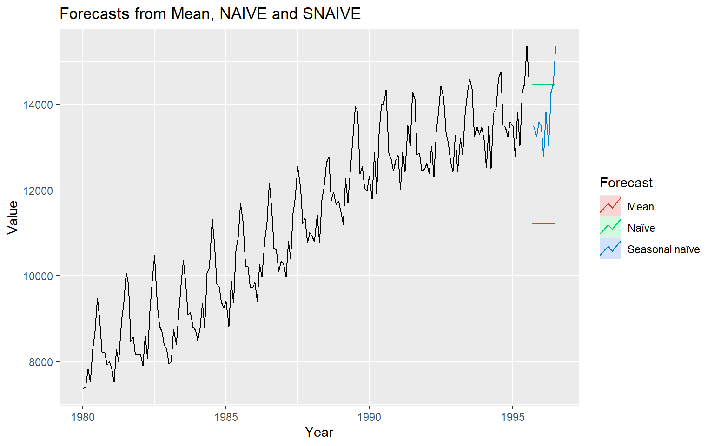

3 Introduction to Time Series Forecasting
3.1 Notation
\hat{Y}_{T+h|T} - The forecast of the time series ùëå at time T+h, made using the information available up to time T.
3.2 Simple time series forecasting techniques
Average method
Naive method/ random walk method
Seasonal naive method
Drift method
3.3 Example: Electricity Demand Forecasting

# Plot some forecasts
autoplot(aelec) +
autolayer(meanf(aelec, h=11),
series="Mean", PI=FALSE) +
autolayer(naive(aelec, h=11),
series="Naïve", PI=FALSE) +
autolayer(snaive(aelec, h=11),
series="Seasonal naïve", PI=FALSE) +
ggtitle("Forecasts from Mean, NAIVE and SNAIVE") +
xlab("Year") + ylab("Value") +
guides(colour=guide_legend(title="Forecast"))
3.4 Time Series and Stochastic Processes
The terms stochastic processes and time series are closely related but not the same.
A is a collection of random variables indexed by time (or space).
\{X_t : t \in T\},
where T is the index set (e.g., discrete or continuous time).
A is a single realization (observed data) of a stochastic process. It is the actual sequence of observations collected over time.
In short:
Stochastic process = model/theory (all possible sequences). The probability mechanism (all possible paths).
Time series = observed data (one sequence). One observed path (the single trajectory we actually have).
3.5 Statistical Properties
Mean function
Let {X_1, X_2, ...} be a sequence of time index random variables.
The mean function of {X_t} is
\mu_X(t)=E(X_t).
Covariance function
The covariance function of {X_t} is
\gamma_X(r, s)=Cov(X_r, X_s)=E[(X_r-\mu_X(r))(X_s-\mu_X(s))]
for all integers (r) and (s).
Autocovariance function
The autocovariance function of {X_t} at lag (h) is defined by \gamma_X(h):=\gamma_X(h, 0)=\gamma(t+h, t)=Cov(X_{t+h}, X_t).
or
The autocovariance function of {X_t} at lag (h) is
\gamma_X(h)=Cov(X_{t+h}, X_t).
Autocorrelation function
The autocorrelation function of {X_t} at lag (h) is
\rho_X(h)=\frac{\gamma_X(h)}{\gamma_X(0)}=Cor(X_{t+h}, X_t).
3.6 Weakly stationary
A time series {X_t} is called weakly stationary if
\mu_X(t) is independent of t.
Var(X_t) = \sigma^2, Variance is constant. 2
\gamma_X(t+h, t) is independent of (t) for each (h). The autocovariance depends only on the lag (\gamma(h) depends only on how far apart two points are (h), and not on the actual time t.
In other words the statistical properties of the time series (mean, variance, autocorrelation, etc.) do not depend on the time at which the series is observed, that is no trend or seasonality. However, a time series with cyclic behaviour (but with no trend or seasonality) is stationary.
3.7 Strict stationarity of a time series
A time series \{X_t\} is called strictly stationary if the random vector [X_1, X_2..., X_n] and [X_{1+h}, X_{2+h}..., X_{n+h}] have the same joint distribution for all integers (h) and (n > 0).
3.8 1. independent and identically distributed (iid) noise
no trend or seasonal component
observations are independent and identically distributed (iid) random variables with zero mean.
Notation: {X_t} \sim IID(0, \sigma^2)
plays an important role as a building block for more complicated time series.
3.9 2. White noise
If {X_t} is a sequence of uncorrelated random variables, each with zero mean and variance \sigma^2, then such a sequence is referred to as white noise.
3.10 Every (IID(0, \sigma^2) sequence is (WN(0, \sigma^2) but not conversely. Why?
1. White Noise (WN)
A sequence \{X_t\} is called white noise with mean 0 and variance \sigma^2, written WN(0, \sigma^2), if:
-
\mathbb{E}[X_t] = 0 for all t.
-
\mathrm{Var}(X_t) = \sigma^2 for all t.
- \mathrm{Cov}(X_t, X_s) = 0 for all t \neq s (uncorrelated across time).
Notice: uncorrelated \neq independent.
2. i.i.d. (0, \sigma^2)
A sequence \{X_t\} is IID(0, \sigma^2) if:
-
\mathbb{E}[X_t] = 0.
-
\mathrm{Var}(X_t) = \sigma^2.
- X_t are independent and identically distributed.
3. Why every IID(0, \sigma^2) is WN(0, \sigma^2)
- Independence \;\Rightarrow\; zero correlation.
- So, an i.i.d. sequence automatically satisfies the white noise conditions (same mean, same variance, no correlation).
Therefore:
IID(0, \sigma^2) \;\;\Rightarrow\;\; WN(0, \sigma^2).
4. Why not conversely?
The reverse is not always true, because white noise only requires uncorrelatedness, not full independence.
That means a sequence could be white noise but still have dependence in higher moments (nonlinear dependence).
3.11 5. Example of WN but not IID
Let \{Z_t\} be i.i.d. N(0,1). Define
X_t = Z_t \cdot Z_{t-1}.
Then:
-
\mathbb{E}[X_t] = 0,
-
\mathrm{Var}(X_t) = 1,
- For t \neq s, \mathrm{Cov}(X_t, X_s) = 0. ✅ So it’s white noise.
But the sequence is not independent (because X_t depends on Z_{t-1}, which also appears in X_{t-1}).
Thus,
X_t \sim WN(0,1) \quad \text{but not} \quad IID(0,1).
3.12 Simulation example
IID series
set.seed(123)
# Parameters
n <- 200 # length of series
sigma <- 1 # standard deviation
# IID(0, sigma^2) ~ Normal(0, sigma^2)
iid_seq <- rnorm(n, mean = 0, sd = sigma)
# Quick check
mean(iid_seq) # should be ~0[1] -0.008570445var(iid_seq) # should be ~sigma^2[1] 0.8895506acf(iid_seq) # autocorrelations ~ 0White noise
set.seed(123)
n <- 200
Z <- rnorm(n, mean = 0, sd = 1)
# Construct WN but not IID
wn_not_iid <- Z[-1] * Z[-n] # X_t = Z_t * Z_{t-1}, length n-1
# Quick check
mean(wn_not_iid) # ~0[1] -0.05650406var(wn_not_iid) # ~1[1] 0.8196189acf(wn_not_iid) # uncorrelated -> ACF ~ 0Side-by-side visualisation
3.13 3. Random walk
A random walk process is obtained by cumulatively summing iid random variables. If {S_t, t=0, 1, 2, ...} is a random walk process, then S_0 =0
S_1=0+X_1
S_2=0+X_1+X_2
...
S_t=X_1+X_2+...+X_t.
Question
Is {S_t, t=0, 1, 2, ...} a weak stationary process?
3.14 Identifying non-stationarity in the mean
Using time series plot
-
ACF plot
ACF of stationary time series will drop to relatively quickly.
The ACF of non-stationary series decreases slowly.
For non-stationary series, the ACF at lag 1 is often large and positive.
3.15 Backshift notation:
BX_t=X_{t-1}
3.16 Ordinary differencing
The first-order differencing can be defined as
\nabla X_t = X_t-X_{t-1}=X_t-BX_t=(1-B)X_t where \nabla=1-B.
The second-order differencing
\nabla^2X_t=\nabla(\nabla X_t)=\nabla(X_t-X_{t-1})=\nabla X_t - \nabla X_{t-1}
\nabla X_t - \nabla X_{t-1}=(X_t-X_{t-1})-(X_{t-1}-X_{t-2})
In practice, we seldom need to go beyond second order differencing.
3.17 Seasonal differencing
Differencing between an observation and the corresponding observation from the previous year.
\nabla_mX_t=X_t-X_{t-m}=(1-B^m)X_t where (m) is the number of seasons. For monthly, (m=12), for quarterly (m=4).
For monthly series
\nabla_{12}X_t=X_t-X_{t-12}
3.18 Twice-differenced series
\nabla^2_{12}X_t=\nabla_{12}X_t-\nabla_{12}X_{t-1} \nabla_{12}X_t-\nabla_{12}X_{t-1}=(X_t-X_{t-12})-(X_{t-1}-X_{t-13}) If seasonality is strong, the seasonal differencing should be done first.
3.19 Deterministic trend vs Stochastic trend
Deterministic trend
Y_t = f(t) + \epsilon_t
where \epsilon_t \sim iid(0, \sigma^2), t = 1, 2, ...T
Mean of the process is time dependent, but the variance of the process is constant.
A trend is deterministic if it is a nonrandom function of time. A deterministic trend is a predictable, fixed function of time. If you know the form of the function, you can determine the trend exactly.
Stochastic trend
A stochastic trend is driven by random shocks that accumulate over time. A stochastic trend is driven by random shocks (also called innovations, disturbances, or error terms) that accumulate over time.
1. Random walk
Y_t = Y_{t-1} + \epsilon_t
Random walk has a stochastic trend.
Model behind naive method.
A trend is said to be stochastic if it is a random function of time.
2. Random walk with drift
Y_t = \alpha + Y_{t-1} + \epsilon_t
Random walk with drift has a stochastic trend and a deterministic trend.
Model behind drift method.
3.20 Random walk
\begin{aligned} Y_t &= Y_{t-1} + \epsilon_t \\ Y_1 &= Y_0 + \epsilon_1 \\ Y_2 &= Y_1 + \epsilon_2=Y_0 + \epsilon_1 + \epsilon_2\\ Y_3 &= Y_2 + \epsilon_3=Y_0 + \epsilon_1 + \epsilon_2 +\epsilon_3\\ . \\ Y_t &=Y_{t-1} + \epsilon_t=Y_0 + \epsilon_1 + \epsilon_2 + \epsilon_3 +...+ \epsilon_t = Y_0 + \sum_{i=1}^{t} \epsilon_t \end{aligned}
Mean: E(Y_t) = Y_0.
Variance: Var(Y_t)=t \sigma^2.
3.21 Random walk with drift
\begin{aligned} Y_t &= \alpha + Y_{t-1} + \epsilon_t \\ Y_1 &= \alpha+Y_0 + \epsilon_1 \\ Y_2 &= \alpha+ Y_1 + \epsilon_2=2 \alpha+Y_0 + \epsilon_1 + \epsilon_2\\ Y_3 &= \alpha+ Y_2 + \epsilon_3= 3 \alpha+ Y_0 + \epsilon_1 + \epsilon_2 +\epsilon_3\\ . \\ Y_t &= \alpha+Y_{t-1} + \epsilon_t= t \alpha+ Y_0 + \epsilon_1 + \epsilon_2 + \epsilon_3 +...+ \epsilon_t \\ Y_t &= t \alpha + Y_0 + \sum_{i=1}^{t} \epsilon_t \end{aligned}
It has a deterministic trend (Y_0 + t \alpha) and a stochastic trend \sum_{i=1}^{t} \epsilon_t.
Mean: E(Y_t) = Y_0 + t\alpha
Variance: Var(Y_t) = t\sigma^2.
There is a trend in both mean and variance.
3.22 Common trend removal (de-trending) procedures
-
Deterministic trend: Time-trend regression
The trend can be removed by fitting a deterministic polynomial time trend. The residual series after removing the trend will give us the de-trended series.
-
Stochastic trend: Differencing
The process is also known as a Difference-stationary process.
3.23 Remove seasonality
Take seasonal differencing
3.24 Example: Differencing on AirPassengers Data
The built-in AirPassengers dataset (monthly airline passengers, 1949–1960) has trend + seasonality.
# Load data
data("AirPassengers")
ts_data <- AirPassengers
#par(mfrow = c(3,2))
# 1. Original series
plot(ts_data, main = "Original Series", ylab = "Passengers")acf(ts_data, main = "ACF: Original Series")# 2. First difference (remove trend)
diff1 <- diff(ts_data, differences = 1)
plot(diff1, main = "1st Difference (Remove Trend)", ylab = "Difference")acf(diff1, main = "ACF: 1st Difference")# 3. Seasonal difference (lag = 12, remove seasonality)
diff_seasonal <- diff(diff1, lag = 12)
plot(diff_seasonal, main = "Seasonal Difference (Remove Seasonality)", ylab = "Difference")
acf(diff_seasonal, main = "ACF: Seasonal Difference")# 3. Seasonal difference (lag = 12, remove seasonality from the original series)
diff_seasonal_only <- diff(ts_data, lag = 12)
plot(diff_seasonal_only, main = "Seasonal Difference (Remove Seasonality)", ylab = "Difference")acf(diff_seasonal_only, main = "ACF: Seasonal Difference")head(ts_data, 14) Jan Feb Mar Apr May Jun Jul Aug Sep Oct Nov Dec
1949 112 118 132 129 121 135 148 148 136 119 104 118
1950 115 126 head(diff1, 14) Jan Feb Mar Apr May Jun Jul Aug Sep Oct Nov Dec
1949 6 14 -3 -8 14 13 0 -12 -17 -15 14
1950 -3 11 15 head(diff_seasonal, 14) Jan Feb Mar Apr May Jun Jul Aug Sep Oct Nov Dec
1950 5 1 -3 -2 10 8 0 0 -8 -4 12
1951 8 -6 13 head(diff_seasonal_only, 14) Jan Feb Mar Apr May Jun Jul Aug Sep Oct Nov Dec
1950 3 8 9 6 4 14 22 22 22 14 10 22
1951 30 24 3.25 Notation: I(d)
Integrated to order d: Series can be made stationary by differencing d times.
- Known as I(d) process.
Question: Show that random walk process is an I(1) process.
The random walk process is called a unit root process. (If one of the roots turns out to be one, then the process is called unit root process.)
3.26 Variance stabilization
Transform the series.
Eg:
Square root: W_t = \sqrt{Y_t}
-
Logarithm: W_t = log({Y_t})
This very useful.
Interpretable: Changes in a log value are relative (percent) changes on the original sclae.